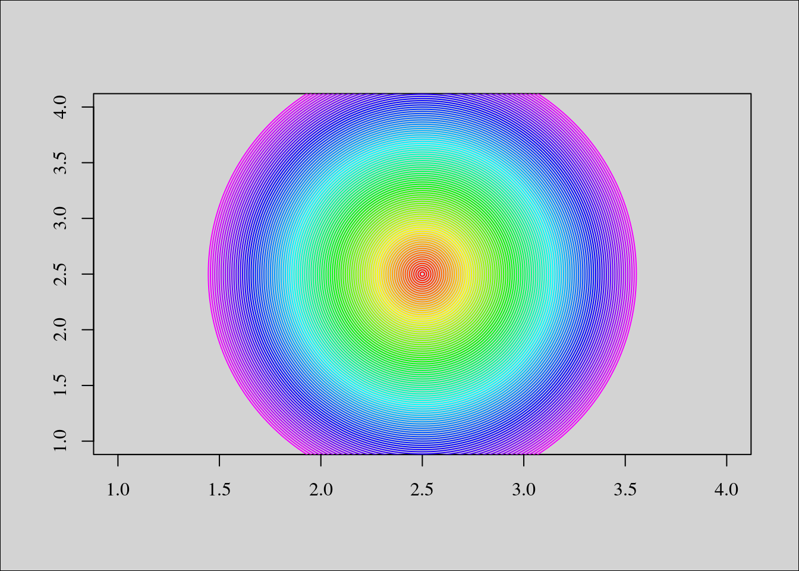
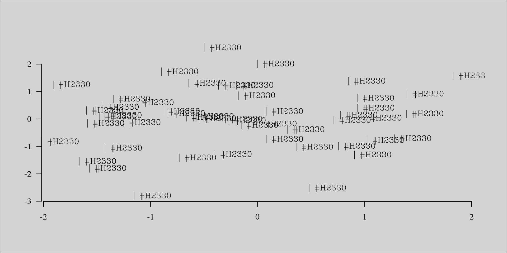
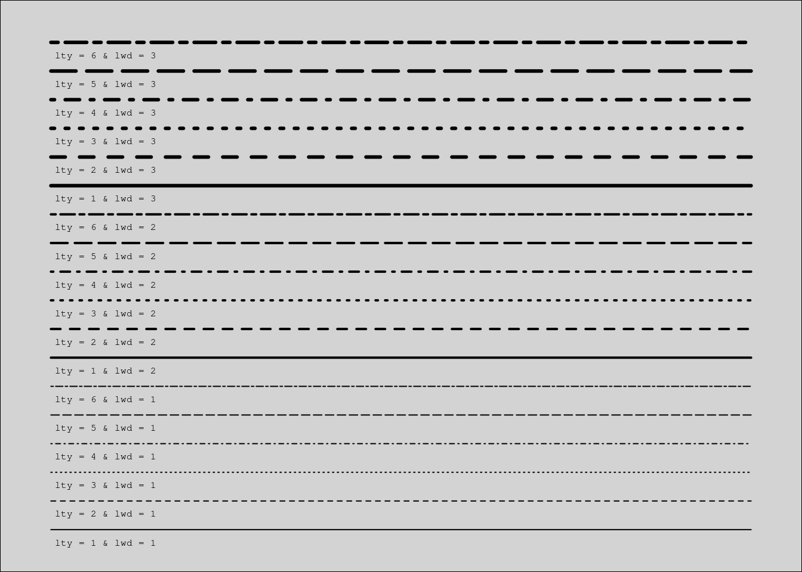
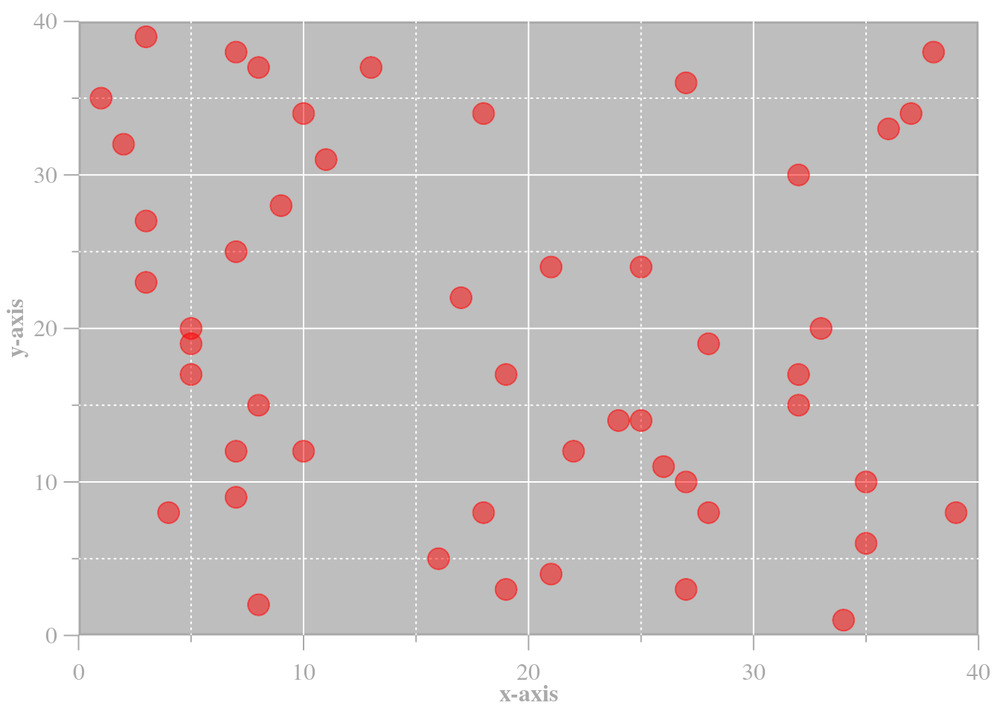
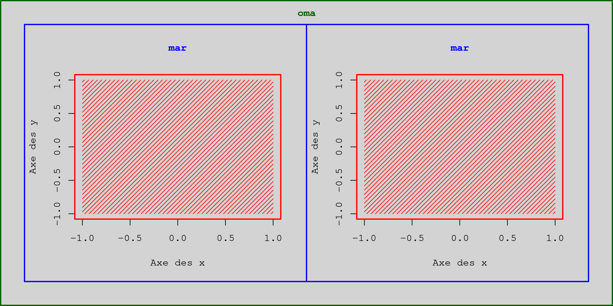

Chapitre6 Paramètres graphiques
Au cours des deux derniers chapitres, nous avons vu comment créer et éditer un graphe à l’aide des principales fonctions contenues dans le package graphics. Dans ce troisième chapitre, nous allons approfondir les notions introduites précédemment, notamment en ce qui a trait aux paramètres graphiques principaux, tels que les fontes de caractères, les types de symboles et de lignes, les axes, les marges, etc. Nous terminerons ce chapitre en nous attardant sur les couleurs sous R, et plus généralement, dans le monde informatique. En effet, ce que nous dirons sur les fontes de caractères et les couleurs sera aussi valable dans le développement Web (e.g. CSS pour Cascading Style Sheets, ou feuilles de style en français).
6.1 La fonction par()
Précédemment, nous avons mentionné que lorsque R trace ou édite un graphe, il va récupérer les valeurs des paramètres graphiques pour adapter les axes, le background, les couleurs, les tailles de caractères, etc. Celles-ci sont stockées dans l’objet par(), qui est également une fonction. En effet, l’affichage d’un paramètre se fait en appelant l’objet (le paramètre est un élément de la liste par()), mais le changement de valeur d’un paramètre se fait en appelant la fonction (le paramètre devient un argument de la fonction par()).
Ces paramètres possèdent des valeurs par défaut afin d’éviter à l’utilisateur de devoir les définir à chaque nouveau graphe. Bien entendu, ces valeurs peuvent être modifiées : heureusement, car même si les valeurs par défaut conviennent à n’importe quelle représentation graphique, le rendu visuel laisse vraiment à désirer. Nous avons déjà modifié les valeurs par défaut de certains paramètres (axes, couleurs, etc.), soit directement dans les fonctions appelées (e.g. plot(), axis(), legend(), polygon(), etc.), soit dans la fonction par().
Et, c’est là une notion très importante : les paramètres graphiques peuvent être modifiés soit dans le par(), soit à la volée, dans les fonctions graphiques. Mentionnons tout de même que certains paramètres ne peuvent être modifiés que via la fonction par(). C’est le cas notamment de mar, oma, new, fig, mfcol et mfrow.
Mais, la modification dans le par() n’aura pas le même effet qu’une modification à la volée. En effet, modifier la couleur du texte dans la fonction plot() n’aura pas pour conséquence de mettre à jour la valeur de cet argument dans le par(). Ainsi, si derrière nous rajoutons, par ex. un titre avec la fonction title() sans spécifier de couleur, celui-ci s’affichera avec la valeur par défaut contenue dans le par(). Au contraire, si on modifie la couleur du texte dans le par(), et qu’aucune précision n’est apportée à la volée concernant ce paramètre, toutes les fonctions graphiques afficheront la couleur du texte selon la nouvelle valeur définie dans le par().
Un dernier point important : toute modification dans la fonction par() sera effective tant qu’un périphérique graphique restera ouvert. La fermeture des périphériques graphiques entraînera la remise à zéro des valeurs des paramètres graphiques. Cependant, il est de coutume de sauvegarder les paramètres graphiques avec leurs valeurs par défaut dans un objet, et de redéfinir le par() avec cet objet une fois le graphique réalisé. Ceci permet de s’assurer que le par() est bien réinitialisé.
## Sauvegarde du par() d'origine
opar <- par()
## Modification du par()
par(bg = "steelblue", mar = c(1, 1, 0, 0), col = "white")
## Commandes graphiques...
## Restauration du par()
par(opar)La fonction par() comporte 72 paramètres graphiques dont la plupart sont modifiables (66 pour être précis). Au cours de ce chapitre, nous allons en détailler une bonne trentaine, ceux que nous avons jugés les plus pertinents.
6.2 Fonte de caractères
Abordons tout d’abord la notion de fonte de caractères. En typographie, une fonte de caractères est un ensemble de règles qui va déterminer le rendu visuel d’une expression textuelle. Il est très fréquent que police et fonte soient confondues. Une fonte de caractère est caractérisée par : - une police de caractères (font family ou typeface en anglais); - un style (normal, italique ou oblique); - une graisse (normal ou gras); - un corps (taille de police).
Ainsi, le Helvetica normal 12 points est une fonte de caractères, mais le Helvetica est une police de caractères. De nombreuses classifications existent pour les polices de caractères. Celle que nous présentons ici à l’avantage de se rapprocher des polices disponibles dans R (et dans le monde du Web). Sous R, trois polices principales de caractères sont disponibles :
- sans-serif (noté
sans) : regroupe les polices sans empattement (c.-à-d. sans les extensions qui viennent terminer les caractères) et à chasse proportionnelle (la largeur des caractères varie en fonction du caractère). Citons le Helvetica, Arial et Verdana comme police sans-serif. - serif (noté
serif) : regroupe les polices à empattement et à chasse proportionnelle. C’est le cas du Times (New Roman) et du Garamond. - monospace (noté
mono) : possède la caractéristique d’avoir une chasse fixe. Ses polices sont préférées pour l’écriture de code informatique car elles permettent un alignement vertical des caractères. R, sous Windows, utilise la police Courier New et sous Mac, le Monaco. Par défaut, la policesansest utilisée sous R pour afficher l’information textuelle sur les graphes. Cette valeur est stockée dans l’argumentfamilydupar(). Regardons les différences entre ces trois polices de caractères.
par(mfrow = c(2, 2), bg = "lightgray")
plot(0, type = "n")
text(1, 0, "Police par défaut", cex = 2)
plot(0, type = "n", family = "sans")
text(1, 0, family = "sans", "Police sans serif", cex = 2)
plot(0, type = "n", family = "serif")
text(1, 0, family = "serif", "Police serif", cex = 2)
plot(0, type = "n", family = "mono")
text(1, 0, family = "mono", "Police mono", cex = 2)Sous R, le style et la graisse sont regroupés sous le même argument : font. Mais, celui-ci est plus précis que family (qui s’applique sur tous les éléments textuels) dans le sens où il se décline en font.axis, font.lab, font.main et font.sub. Regardons les différents styles disponibles.
par(mfrow = c(2, 2), bg = "lightgray")
plot(0, type = "n", family = "serif", font.lab = 1, font.axis = 1)
text(1, 0, "Style et graisse\nNORMAL", font = 1)
plot(0, type = "n", family = "serif", font.lab = 2, font.axis = 2)
text(1, 0, "Style et graisse\nGRAS", font = 2)
plot(0, type = "n", family = "serif", font.lab = 3, font.axis = 3)
text(1, 0, "Style et graisse\nITALIQUE", font = 3)
plot(0, type = "n", family = "serif", font.lab = 4, font.axis = 4)
text(1, 0, "Style et graisse\nGRAS-ITALIQUE", font = 4)Dans les fonctions text() et mtext(), seul l’argument font est disponible.
De plus, tous ces paramètres auraient pu être modifiés dans le par() avant de
réaliser le graphique. Le corps de police se modifiera avec les arguments
cex.axis, cex.lab, cex.main, cex.sub. Attention : l’argument cex
modifie la taille des symboles ponctuels (sauf dans les fonctions text() et
mtext()). Regardons dans le par() les valeurs par défaut de chacun de ces
paramètres.
par()[grep("cex", names(par()))]
#> $cex
#> [1] 1
#>
#> $cex.axis
#> [1] 1
#>
#> $cex.lab
#> [1] 1
#>
#> $cex.main
#> [1] 1.2
#>
#> $cex.sub
#> [1] 1Modifions ces paramètres de corps de police.
par(mfrow = c(2, 2), bg = "lightgray")
plot(0, family = "serif", type = "n")
text(1, 0, "Corps par défaut", font = 2)
plot(0, family = "serif", type = "n", cex.lab = 1, cex.axis = 1)
text(1, 0, "Corps de 1", font = 2, cex = 1)
plot(0, family = "serif", type = "n", cex.lab = 2, cex.axis = 2)
text(1, 0, "Corps de 3", font = 2, cex = 2)
plot(0, family = "serif", type = "n", cex.lab = .35, cex.axis = .35)
text(1, 0, "Corps de .35", font = 2, cex = .35)Revenons maintenant aux polices de caractères. Il en existe deux autres sous R et celles-ci sont regroupées dans les fontes Hershey. Il s’agit des polices script (également appelée cursive) qui imite l’écriture manuscrite et gothic (ou fantaisie) avant tout décorative. Cet ensemble de fontes regroupe des polices permettant d’afficher toute sorte de symboles (grecs, musicaux, japonais, pictogrammes, etc.). Le meilleur moyen d’en faire le tour reste encore d’utiliser la commande suivante.
Regardons rapidement comment utiliser ces polices et caractères spéciaux.
plot(0, type = "n", xlim = c(1, 4), ylim = c(1, 4), family = "serif")
text(3.5, 2, " | CL", vfont = c("serif", "plain"), cex = 2)
text(1.5, 2, " | DI", vfont = c("serif", "plain"), cex = 2, col = "red")
text(1.5, 3, " | HE", vfont = c("serif", "plain"), cex = 2, col = "red")
text(3.5, 3, " | SP", vfont = c("serif", "plain"), cex = 2)
text(2.5, 3.5, "Police Gothique",
vfont = c("gothic english", "plain"))
text(1.5, 3.5, " | #H2330", vfont = c("serif", "plain"), cex = 2)
text(3.5, 3.5, " | #H2331", vfont = c("serif", "plain"), cex = 2)
text(2.5, 3, " | *z", vfont = c("serif", "plain"), cex = 2)
text(2.5, 2, " | *p", vfont = c("serif", "plain"), cex = 2)
text(2.5, 2.5, "Police Script",
vfont = c("script", "italic"), srt = 45)
text(2.5, 1.5, "Police Symbol",
vfont = c("serif symbol", "bold"))Finalement, regardons comment ajouter des expressions mathématiques sur un graphe avec la fonction expression. N’hésitez pas à vous reporter aux rubriques d’aide de cette fonction et de la fonction plotmath() pour en savoir plus.
6.3 Symboles ponctuels
Les points possèdent trois caractéristiques : un type de symbole, une taille et
une couleur. Le type de symbole est défini par l’argument pch, sa taille par
cex, et sa couleur par col. Modifions les deux derniers. Nous allons
incrémenter progressivement le symbole par défaut de R, et à chaque augmentation
de taille, on va attribuer une couleur différente, en respectant l’ordre des
couleurs dans l’arc-en-ciel.
k <- 1
plot(0, xlim = c(1, 4), ylim = c(1, 4), type = "n", ann = FALSE)
for (i in seq(.5, 50, by = .5)){
points(2.5, 2.5, cex = i, col = rainbow(120)[k])
k <- k + 1
}
Attention, certains symboles sont caractérisés par deux couleurs : le contour et
le fond. L’argument col contrôlera la couleur de contour alors que l’argument
bg définira la couleur de fond. C’est le cas notamment des symboles 21 à 25.
La figure suivante illustre différentes valeurs possibles pour l’argument pch
qui contrôle le type de symbole. Notons que la valeur 1 sera différente de
la valeur ‘1’, la première affichant le premier symbole alors que le second
affichera la valeur 1.
Finalement, mentionnons qu’il est possible d’insérer des symboles Hershey via la fonction text().
x <- rnorm(50)
y <- rnorm(50)
plot(x, y, type = "n", ann = FALSE, bty = "n", las = 1)
text(x, y, " | #H2330", vfont = c("serif", "plain"))
6.4 Types de lignes
Les lignes, tout comme les bordures de polygones et les axes, possèdent trois caractéristiques sur lesquelles on peut jouer : le type de ligne (lty), son épaisseur (lwd) et sa couleur (col). La figure suivante illustre ces différentes caractéristiques (inutile de détailler la couleur).

6.5 Modification des axes
Les axes sont un des éléments graphiques possédant probablement le plus grand nombre de paramètres modifiables. Et pour cause, c’est un élément clé pour la compréhension de l’information illustrée sur le graphique. Les arguments cex.axis, col.axis, font.axis ont déjà été abordés dans les sections précédentes. Nous n’y reviendrons pas.
Les arguments xaxt et yaxt vont contrôler l’affichage des axes : s’ils ont la valeur ‘n’, les axes ne seront pas affichés après l’appel à des fonctions de haut niveau graphique (e.g. plot()). Cela aura le même effet qu’utiliser l’argument axes de la fonction plot() et de lui attribuer la valeur FALSE. Mais, dans ce dernier cas, la boîte délimitant la région du plot ne sera pas affichée non plus.
Un autre argument peut être intéressant. Il s’agit de mgp. Celui-ci possède trois valeurs numériques qui vont contrôler le positionnement du nom des axes, des étiquettes des axes et des axes eux-même. Ces positions sont relatives à la délimitation de la région graphique.
plot(0, pch = 15, type = "n")
text(1, 0, "Défaut", font = 2, cex = 2)
par(mgp = c(0, 1, 0))
plot(0, pch = 15, type = "n")
text(1, 0, "Modification\ndu nom des axes", font = 2, cex = 2)
par(mgp = c(3, 2, 0))
plot(0, pch = 15, type = "n")
text(1, 0, "Modification\ndes étiquettes", font = 2, cex = 2)
par(mgp = c(3, 1, -1.25))
plot(0, pch = 15, type = "n")
text(1, 0, "Modification\ndes axes", font = 2, cex = 2)Le tableau suivant liste les paramètres graphiques se rapportant aux axes qu’il est intéressant de connaître.
| Argument | Signification | par() |
À la volée |
|---|---|---|---|
ann |
Contrôle la présence du nom des axes | x | x |
axes |
TRUE ou FALSE (pas d’axes ni de boîte) | & x | |
cex.axis |
Taille de caractères des étiquettes des axes | x | x |
cex.lab |
Taille de caractères du nom des axes | x | x |
col.axis |
Couleur des axes et de leurs étiquettes | x | x |
col.lab |
Couleur du nom des axes | x | x |
col.ticks |
Couleur de la graduation | & x | |
font.axis |
Style et graisse des étiquettes | x | x |
font.lab |
Style et graisse du nom des axes | x | x |
las |
Orientation des étiquettes des axes (0, 1, 2, 3) | x | x |
mgp |
Voir page précédente | x | |
tck |
Longueur de la graduation | x | x |
tick |
TRUE ou FALSE (pas de graduation) | & x | |
lty |
Type de tracé des axes | x | x |
lty.ticks |
Type de tracé de la graduation | & x | |
lwd |
Épaisseur des axes | x | x |
lwd.ticks |
Épaisseur de la graduation | & x | |
xaxp |
Nombre de graduation en abscisse | x | x |
xaxs |
‘r’ (ajout de 4% aux limites de l’axe) ou ‘i’ | x | x |
xaxt |
TRUE ou FALSE (pas d’axe des x) | x | x |
xlab |
Nom de l’axe des x | & x | |
xlim |
Étendue de l’axe des x | & x | |
yaxp |
Nombre de graduation en ordonnée | x | x |
yaxs |
Voir xaxs |
x | x |
yaxt |
Voir xaxt |
x | x |
ylab |
Nom de l’axe des y | & x | |
ylim |
Étendue de l’axe des y | & x |
Une modification à la volée signifie que le paramètre en question verra sa valeur par défaut changée dans les fonctions graphiques telles que plot(), axis(), etc. Le paramètre las pourra prendre les valeurs :
las = 0: étiquettes parallèles aux axes;las = 1: étiquettes horizontales;las = 2: étiquettes perpendiculaires aux axes;las = 3: étiquettes verticales.
Pour terminer, regardons un exemple faisant appel à certains de ces paramètres graphiques.
## Empty plot
par(mgp = c(1.75, 0.75, 0))
plot(0, type = "n", xlim = c(0, 40), ylim = c(0, 40), axes = FALSE, ann = FALSE, xaxs = "i", yaxs = "i")
## Background
rect(0, 0, 40, 40, col = "gray", border = "darkgray", lwd = 3)
for (i in seq(10, 30, 10)){
points(c(0, 40), c(i, i), col = "white", type = "l")
points(c(i, i), c(0, 40), col = "white", type = "l")
}
for (i in seq(5, 35, 10)){
points(c(0, 40), c(i, i), col = "white", type = "l", lty = 3)
points(c(i, i), c(0, 40), col = "white", type = "l", lty = 3)
}
## Axes principaux
axis(side = 1, at = seq(0, 40, by = 10), labels = seq(0, 40, by = 10), lwd = 0, pos = 0, lwd.ticks = 1,
col = "darkgray", family = "serif", col.axis = "darkgray")
axis(side = 2, at = seq(0, 40, by = 10), labels = seq(0, 40, by = 10), lwd = 0, pos = 0, lwd.ticks = 1,
col = "darkgray", family = "serif", las = 2, col.axis = "darkgray")
## Axes secondaires
axis(side = 1, at = seq(5, 35, by = 10), labels = FALSE, lwd = 0, pos = 0, tck = -0.01, lwd.ticks = 1,
col.ticks = "darkgray")
axis(side = 2, at = seq(5, 35, by = 10), labels = FALSE, lwd = 0, pos = 0, tck = -0.01, lwd.ticks = 1,
col.ticks = "darkgray")
## Nom des axes
mtext(text = "x-axis", side = 1, line = 1.5, family = "serif", font = 2, col = "darkgray")
mtext(text = "y-axis", side = 2, line = 1.75, family = "serif", las = 0, font = 2, col = "darkgray")
## Informations
x <- sample(1:39, 50, replace = TRUE)
y <- sample(1:39, 50, replace = TRUE)
points(x, y, col = "#FF000080", pch = 19, cex = 2)
6.6 Ajustement des marges
Les marges sont également une notion importante d’un graphique. Plusieurs paramètres graphiques permettent de les contrôler. Nous n’en verrons que deux : oma (pour outer margin) et mar (pour figure margin). Regardons à quoi elles correspondent au travers de deux exemples.
par(oma = c(2, 2, 2, 2), bg = "lightgray", family = "mono")
plot(0, 0, type = "n", xlab = "Axe des x", ylab = "Axe des y")
box("plot", col = "red", lwd = 2)
rect(-1, -1, 1, 1, border = NA, col = "red", density = 20, angle = 45)
box("figure", col = "blue", lwd = 2)
box("outer", col = "darkgreen", lwd = 4)
mtext(side = 2, line = 4.75, text = "oma", col = "darkgreen", font = 2)
mtext(side = 3, line = 1.5, text = "mar", col = "blue", font = 2)par(oma = c(2, 2, 2, 2), bg = "lightgray", mfrow = c(1, 2))
par(family = "mono")
plot(0, 0, type = "n", xlab = "Axe des x", ylab = "Axe des y")
box("plot", col = "red", lwd = 2)
rect(-1, -1, 1, 1, border = NA, col = "red", density = 20, angle = 45)
box("figure", col = "blue", lwd = 2)
mtext(side = 3, line = 1.75, text = "mar", col = "blue", font = 2)
plot(0, 0, type = "n", xlab = "Axe des x", ylab = "Axe des y")
box("plot", col = "red", lwd = 2)
rect(-1, -1, 1, 1, border = NA, col = "red", density = 20, angle = 45)
box("figure", col = "blue", lwd = 2)
mtext(side = 3, line = 1.75, text = "mar", col = "blue", font = 2)
box("outer", col = "darkgreen", lwd = 4)
mtext(side = 3, line = 0.5, text = "oma", col = "darkgreen", font = 2, outer = TRUE)
L’espace compris entre les bordures verte et bleue correspond à la marge
extérieure à la région graphique (outer margin). Elle est contrôlée par le
paramètre oma. Par défaut, sa valeur est :
Ces quatre chiffres correspondent respectivement aux marges en bas, à gauche, en haut et à droite. Comme on peut le voir sur la figure 3.13, ce paramètre peut être intéressant à ajuster dans le cas d’une figure composite. En effet, il permettra de définir des marges communes à tous les graphes de la figure.
L’argument mar, quant à lui, contrôle la taille de la région du plot (excluant les axes). Son ajustement est donc très important. Par défaut, il vaut :
La marge du bas est destinée à accueillir à la fois le nom de l’axe des x et un sous-titre : pour cela, sa valeur est plus importante que les autres marges. Notamment, la marge de droite, qui par défaut, ne contiendra aucun élément. Il n’existe pas de règle absolue concernant ce paramètre : la conception graphique de la figure guidera sa définition.
par(mfrow = c(2, 2), bg = "lightgray", family = "serif")
plot(0, pch = 15, main = "'mar' par défaut")
box("figure", lwd = 2)
box("plot", col = "red", lwd = 2)
par(mar = c(8, 8, 8, 8))
plot(0, pch = 15, main = "'mar' = c(8, 8, 8, 8)")
box("figure", lwd = 2)
box("plot", col = "red", lwd = 2)
par(mar = c(2, 2, 2, 2))
plot(0, pch = 15, main = "'mar' = c(2, 2, 2, 2)")
box("figure", lwd = 2)
box("plot", col = "red", lwd = 2)
par(mar = c(1, 1, 1, 1))
plot(0, pch = 15, main = "'mar' = c(1, 1, 1, 1)")
box("figure", lwd = 2)
box("plot", col = "red", lwd = 2)6.7 Les couleurs sous R
Terminons ce chapitre par les couleurs. C’est un domaine très vaste. En informatique, il existe plusieurs systèmes de représentation des couleurs. On peut utiliser des palettes de couleurs prédéfinies, le système Rouge-Vert-Bleu, RVB (ou RGB en anglais) ou encore le système hexadécimal. D’autres systèmes existent, mais nous ne les verrons pas aujourd’hui. Commençons par le plus simple : les palettes. R dispose d’une palette de base dans laquelle figurent huit couleurs prédéfinies.
palette()
#> [1] "black" "#DF536B" "#61D04F" "#2297E6" "#28E2E5" "#CD0BBC" "#F5C710"
#> [8] "gray62"Cette palette, bien que peu garnie, est intéressante, car elle permet de choisir une couleur par son nom ou par sa position dans le vecteur palette(). Outre cette palette, R met à notre disposition la palette colors() qui comporte 657 couleurs, chacune avec un nom.
colors()[1:8]
#> [1] "white" "aliceblue" "antiquewhite" "antiquewhite1"
#> [5] "antiquewhite2" "antiquewhite3" "antiquewhite4" "aquamarine"D’autres palettes existent sous R, mais nous en parlerons plus loin, car nous devons voir avant certaines notions importantes de colorimétrie. Qu’est-ce-qu’une couleur ? En informatique, on utilise souvent (mais pas tout le temps) la synthèse additive des trois couleurs primaires : Rouge-Vert-Bleu. Dans ce système, 100% de rouge, 100% de vert et 100% de bleu donnera du blanc. En quantités égales, on obtiendra du gris dont la teinte dépendra de la quantité de couleur. Les valeurs de chaque couleur primaire s’étalonnent de 0 à 1 (100%) ou de 0 à 255.
| Nom | Rouge | Vert | Bleu |
|---|---|---|---|
| Rouge | 100% | 0% | 0% |
| Bleu | 0% | 0% | 100% |
| Vert | 0% | 100% | 0% |
| Noir | 0% | 0% | 0% |
| Blanc | 100% | 100% | 100% |
| Gris clair | 80% | 80% | 80% |
| Gris foncé | 20% | 20% | 20% |
| Cyan | 0% | 100% | 100% |
| Magenta | 100% | 0% | 100% |
| Jaune | 100% | 100% | 0% |
La fonction rgb() permet de construire des couleurs en fournissant la quantité de chaque couleur primaire. Par défaut, ces quantités doivent être indiquées dans l’intervalle [0, 1]. Mais, l’argument maxColorValue permet de modifier cet intervalle. Ainsi, les trois graphiques générés avec les commandes suivantes seront identiques :
k <- rgb(red = 1, green = 0, blue = 1)
plot(0, pch = 15, cex = 10, col = k)
k <- rgb(100, 0, 100, maxColorValue = 100)
plot(0, pch = 15, cex = 10, col = k)
k <- rgb(255, 0, 255, maxColorValue = 255)
plot(0, pch = 15, cex = 10, col = k)Une autre fonction intéressante est la fonction col2rgb(). Celle-ci convertie le nom d’une couleur (prédéfinie dans les palettes de R) en code RGB dans l’intervalle [0, 255]. Elle permet aussi de convertir un code hexadécimal.
col2rgb("red")
#> [,1]
#> red 255
#> green 0
#> blue 0
col2rgb("skyblue")
#> [,1]
#> red 135
#> green 206
#> blue 235
col2rgb(c("red", "cyan", "lightgray", "salmon"))
#> [,1] [,2] [,3] [,4]
#> red 255 0 211 250
#> green 0 255 211 128
#> blue 0 255 211 114Et le codage en hexadécimal dans tout ça. C’est quoi ? Wikipédia nous dit que c’est un système de numération positionnel en base 16. Plutôt brutal… En version courte, c’est une manière de représenter les nombres différemment du système classique : le système décimal que l’on connaît tous. A la différence du système binaire (système reposant sur une base 2 [0 et 1]), le système hexadécimal utilise 16 symboles : les dix chiffres arabes et les six premières lettres de l’alphabet (de A a F). Le tableau suivant donne la correspondance avec le système décimal.
| Hexadécimal | 0 | 1 | 2 | 3 | 4 | 5 | 6 | 7 | 8 | 9 | A | B | C | D | E | F |
| Décimal | 0 | 1 | 2 | 3 | 4 | 5 | 6 | 7 | 8 | 9 | 10 | 11 | 12 | 13 | 14 | 15 |
Pour retranscrire des couleurs, on utilisera six caractères hexadécimaux : les deux premiers pour le rouge, les deux suivants pour le vert et les deux derniers pour le bleu. Le tout précédé du symbole dièse. Voici le code hexadécimal de quelques couleurs.
| Nom | Code hexadécimal |
|---|---|
| Rouge | \#FF0000 |
| Bleu | \#0000FF |
| Vert | \#00FF00 |
| Noir | \#000000 |
| Blanc | \#FFFFFF |
| Gris clair | \#CCCCCC |
| Gris foncé | \#333333 |
| Cyan | \#00FFFF |
| Magenta | \#FF00FF |
| Jaune | \#FFFF00 |
Comment convertir une valeur RGB en écriture hexadécimale ? Là encore, c’est très simple : on prend la quantité de rouge (exprimée dans un intervalle [0, 255]), et on la divise par 16. Ensuite, on prend le modulo (partie entière de la division), et on le convertit en hexadécimal d’après la correspondance donnée dans le tableau 3.3. On obtient ainsi le premier caractère hexadécimal de la couleur rouge. Puis, on fait de même avec le reste de la division et on obtient finalement le second symbole hexadécimal de la couleur rouge. On procède de même pour les deux autres couleurs RGB et voilà, une couleur exprimée en code hexadécimal.
Voyons un exemple avec le gris clair pour lequel la quantité de chaque couleur primaire est 80% (soit 204 dans un intervalle [0, 255]).
## Premier caractère hexa du gris clair
204%/%16
#> [1] 12
## Soit C en hexadécimal
## Second caractère hexa du gris clair
204%%16
#> [1] 12
## Soit C en hexadécimal
## Code complet
hexa <- "#CCCCCC"
## Vérification
col2rgb(hexa)
#> [,1]
#> red 204
#> green 204
#> blue 204Malheureusement, il n’existe pas de fonction sous R pour convertir une couleur en hexadécimal. Nous allons donc en créer une qui permettra de convertir en écriture hexadécimale soit un nom de couleur (présent dans les palettes de R), soit un code RGB. Cette fonction marchera pour plusieurs couleurs simultanément. Dans le cas des noms, ils devront être dans un vecteur, alors que pour les codes RGB, ils devront être dans une matrice telle que celle obtenue après l’appel à la fonction col2rgb(). Nous allons appeler cette fonction col2hex(). Notons que le degré de transparence sera pris en compte. Commençons par définir cette fonction.
col2hex <- function(cols, maxColorValue = 1){
if (missing(cols))
stop("Color(s) argument is missing.")
if (is.matrix(cols)){
if (nrow(cols) > 4)
stop("Color matrix has to be in the col2rgb format.")
ncols <- ncol(cols)
}
if (is.character(cols)) ncols <- length(cols)
if (!is.character(cols) && !is.matrix(cols))
stop("Colors have to be a vector of names or a RGB matrix.")
mat <- data.frame(Hex = c(0:9, LETTERS[1:6]), Dec = 0:15)
for (i in 1 : 2) mat[ , i] <- as.character(mat[ , i])
hexa <- NULL
for (i in 1 : ncols){
loc <- "#"
if (is.character(cols)){
col <- tolower(cols[i])
pos <- which(colors() == col)
if (length(pos) == 0)
stop(paste("Color", i, "not found."))
col <- col2rgb(col)
}else{
col <- cols[ , i]
if (min(col) < 0)
stop("RGB colors are not valid.")
if (maxColorValue == 1 && max(col) > 1)
stop("Inappropriate maxColorValue argument.")
if (maxColorValue != 255)
col <- col * (255/maxColorValue)
col <- as.matrix(col)
}
for (k in 1 : nrow(col)){
first <- as.character(col[k, 1] %/% 16)
c1 <- mat[which(mat[, "Dec"] == first), "Hex"]
secon <- as.character(col[k, 1] %% 16)
c2 <- mat[which(mat[, "Dec"] == secon), "Hex"]
loc <- paste(loc, c1, c2, sep = "")
}
hexa <- c(hexa, loc)
}
return(hexa)
}Essayons cette fonction.
## Avec des noms de couleurs
col2hex("red")
#> [1] "#FF0000"
col2hex(c("red", "cyan", "skyblue"))
#> [1] "#FF0000" "#00FFFF" "#87CEEB"
## Avec des codes RGB
(color <- col2rgb("red")/255)
#> [,1]
#> red 1
#> green 0
#> blue 0
col2hex(color)
#> [1] "#FF0000"
(color <- col2rgb(c("red", "cyan", "skyblue")))
#> [,1] [,2] [,3]
#> red 255 0 135
#> green 0 255 206
#> blue 0 255 235
col2hex(color, maxColorValue = 255)
#> [1] "#FF0000" "#00FFFF" "#87CEEB"
## Verifions
(color <- col2rgb(c("red", "cyan", "skyblue")))
#> [,1] [,2] [,3]
#> red 255 0 135
#> green 0 255 206
#> blue 0 255 235
col2rgb(col2hex(color, maxColorValue = 255))
#> [,1] [,2] [,3]
#> red 255 0 135
#> green 0 255 206
#> blue 0 255 235
## Avec de la transparence
(color <- col2rgb("#FF000088", alpha = TRUE))
#> [,1]
#> red 255
#> green 0
#> blue 0
#> alpha 136
col2hex(color, maxColorValue = 255)
#> [1] "#FF000088"Quelques mots sur la transparence. Le logiciel R gère très bien la transparence des couleurs. Pour une couleur au format RGB, la transparence sera renseignée avec l’argument alpha. La valeur 0 signifiera une transparence totale, alors qu’une valeur de 100% (ou 1 ou 255) une opacité complète (valeur par défaut). En hexadécimal, il suffira de rajouter à la fin du code deux autres caractères hexadécimaux indiquant le pourcentage d’opacité. La traduction de décimal à hexadécimal suit la même règle de conversion que pour les couleurs. Ainsi, une totale opacité est équivalente à FF.
Mais, pourquoi compliquer les choses en parlant d’hexadécimal ? Il se trouve qu’il existe sous R d’autres palettes de couleurs, mais contrairement aux autres palettes vu précédemment (colors() et palette()), elles ne retournent pas des noms de couleurs, mais du code hexadécimal. Voici les deux principales.
## Arc-en-ciel
rainbow(24)
#> [1] "#FF0000" "#FF4000" "#FF8000" "#FFBF00" "#FFFF00" "#BFFF00" "#80FF00"
#> [8] "#40FF00" "#00FF00" "#00FF40" "#00FF80" "#00FFBF" "#00FFFF" "#00BFFF"
#> [15] "#0080FF" "#0040FF" "#0000FF" "#4000FF" "#8000FF" "#BF00FF" "#FF00FF"
#> [22] "#FF00BF" "#FF0080" "#FF0040"
## Dégradé de gris
gray(seq(0, 1, length.out = 10))
#> [1] "#000000" "#1C1C1C" "#393939" "#555555" "#717171" "#8E8E8E" "#AAAAAA"
#> [8] "#C6C6C6" "#E3E3E3" "#FFFFFF"Et en image.
par(mar = c(0, 0, 0, 0), mfrow = c(2, 1))
image(matrix(1:255, ncol = 1), col = rainbow(255), axes = FALSE)
box("figure", lwd = 2)
image(matrix(c(0:255), ncol = 1), col = gray(c(0:255)/255), axes = FALSE)
box("figure", lwd = 2)Pour terminer ce chapitre, nous vous présentons une fonction que nous avons implémentée et qui pourrait vous être très utile. Celle-ci va vous permettre de retourner le code hexadécimal de couleurs que vous aurez sélectionnées en cliquant sur une palette. Vous aurez le choix des palettes, et vous pourrez récupérer les codes hexadécimaux directement dans la console R.
Voici le c{}ur de la fonction pickcolor().
pickcolor <- function(ramp, n){
ncols <- length(ramp)
switch(.Platform$OS.type,
unix = {quartz(width = 7, height = .5)},
windows = {x11(width = 7, height = .5)})
par(mar = c(0, 0, 0, 0))
image(matrix(1 : ncols, ncol = 1), col = ramp, axes = FALSE)
mat <- as.data.frame(matrix(ncol = 3, nrow = ncols))
for (i in 1 : ncols){
xx <- (par()$usr[2]-par()$usr[1])/ncols
mat[i, 1] <- par()$usr[1]+(i-1)*xx
xx <- (par()$usr[2]-par()$usr[1])/ncols
mat[i, 2] <- par()$usr[1]+(i)*xx
mat[i, 3] <- ramp[i]
}
i <- 0
while (n > i^2)
i <- i + 1
dims <- c(i, i)
xy <- locator(n, type = "p", pch = 4)
switch(.Platform$OS.type,
unix = {quartz(width = 6, height = 6)},
windows = {x11(width = 6, height = 6)})
par(mfrow = dims)
cols <- NULL
for (i in 1 : n){
par(mar = c(0, 0, 0, 0), family = "serif")
pos <- which(mat[ , 1] <= xy$x[i] | mat[ , 2] >= xy$x[i])
image(matrix(1), col = mat[pos, 3], axes = FALSE)
rvb <- col2rgb(mat[pos, 3])
if (rvb[1, 1] == rvb[2, 1] && rvb[1, 1] == rvb[3, 1] && rvb[1, 1] < 50){
text(0, 0, mat[pos, 3], cex = 2, col = "white")
}else{
text(0, 0, mat[pos, 3], cex = 2)
}
box("figure", col = "lightgray")
cols <- c(cols, mat[pos, 3])
}
return(cols)
}Cette fonction possède deux arguments :
ramp: une palette de couleurs (vecteur de couleurs hexadécimales);n: nombre de couleurs à cliquer. Voyons un premier exemple avec la fonctiongray().
Après avoir cliquer neuf fois sur cette palette, les neuf codes hexadécimaux sont retournés dans la console et la figure suivante s’affiche.
La fonction colorRampPalette() du package graphics permet de créer ses propres palettes de couleurs. Il suffit pour cela d’indiquer un certain nombre de couleurs (minimum deux), et cette fonction retournera une fonction d’interpolation entre ces couleurs. Il suffira d’utiliser cette nouvelle fonction pour créer sa rampe de couleur. Dans l’exemple ci-dessous, on génère une palette de 255 couleurs partant du blanc et arrivant au rouge, en passant par le jaune.
rampcols <- colorRampPalette(c("white", "yellow", "red"))
rampcols(255)[1:12]
#> [1] "#FFFFFF" "#FFFFFC" "#FFFFFA" "#FFFFF8" "#FFFFF6" "#FFFFF4" "#FFFFF2"
#> [8] "#FFFFF0" "#FFFFEE" "#FFFFEC" "#FFFFEA" "#FFFFE8"Utilisons cette palette de couleurs avec notre fonction interactive.
Ceci clôture notre chapitre sur les paramètres graphiques. Les deux chapitres suivants sont un peu plus avancés mais ils vont vous permettre d’automatiser vos productions graphiques et de créer des compositions aussi esthétiques que sous Adobe Illustrator. Ou presque…